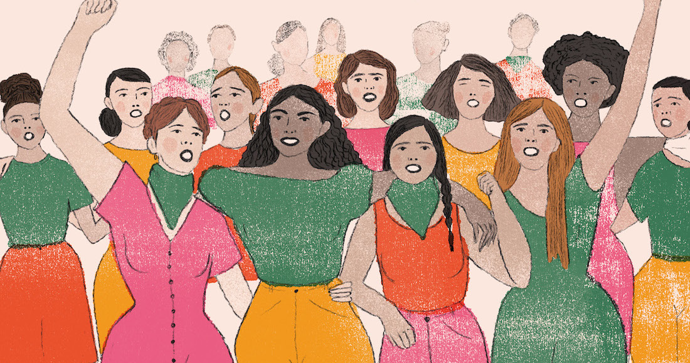
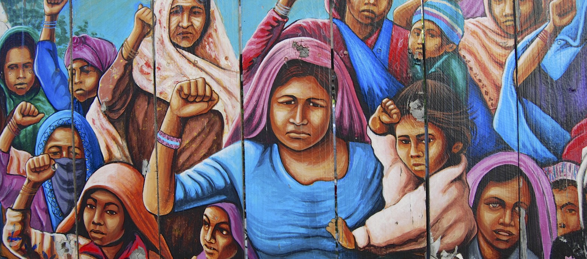
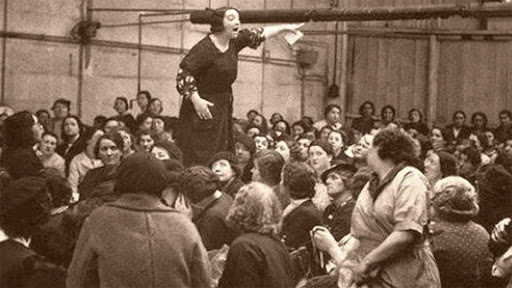
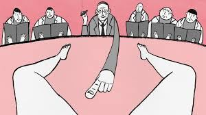

Gracias a diversos aportes hechos por el feminismo, el día de hoy podemos conocer las luchas que han hecho las mujeres hasta la actualidad. Estas batallas, lograron que hoy en día podamos ver a una sociedad más igualitaria.
En los pueblos indígenas las mujeres tenían un estatuto más igualitario que los que tenían en la unión europea. Cuando se referían al clítoris usaban otra palabra y esto hace denotar que no tenían relación con su cuerpo y su sexualidad y eso las llevaba a no verse únicamente como seres reproductivos. Además las mujeres en estas culturas, se veían desde un plano mágico-religioso, relacionado al culto de las diosas de la fertilidad.
La virginidad viene asociada a una moral occidental. Dentro del territorio europeo la virginidad era como un valor. En los pueblos indígenas, se valoran otras cosas, como la “verdad”. Tenía más peso, en algunos matrimonios, que los padres dijeran si la chica era o no virgen. Había sanciones si no se decía la verdad.
En esta época también se produjo la circulación de mujeres entre diferentes grupos como una necesidad para asegurar la reproducción de la comunidad y esta práctica, a su vez, sentó las bases objetivas del inicio de la opresión hacia las mujeres. Aunque, en algunas sociedades podían tomar decisiones, además de tener derechos de sucesión en el cacicazgo. Pero, mientras más aumentaba la producción social y el poder público, la participación y autoridad de las mujeres se reducía.
El rol de la mujer durante la colonia, estuvo signado por la mezcla entre los procesos que venían dándose en América y la violencia con la que españoles y portugueses impusieron sus leyes y costumbres. Su papel pasó a ser el de reproductoras de vida.
Las mujeres blancas eran recluidas en el hogar, y las indígenas aprovechaban esto para estar sexualmente con hombres blancos. Muchas indias buscaban a hombres blancos para tener hijos, ya que esto provocaba que no debieran pagar un impuesto o menos tributación de la que se les pedía por ser indias. La nueva raza criolla viene del hombre blanco y la mujer aborigen.
Durante la colonia se introducen desde África: los esclavos y esclavas negras. Ellas fueron las que se resistieron a la esclavitud; hasta se provocaban abortos. América Latina era un mapa cromático. La meritocracia estaba muy ligada al color. Las diferencias raciales estaban acompañadas por las de género, si eras de color y mujer, había mayor carga sobre esa discriminación o sobre el aislamiento.
Los españoles y portugueses tenían un concepto aristotélico y sexista, ellos creían que las mujeres son un recipiente cuya función es contener y alimentar lo depositado por los hombres. Para Aristóteles, los varones con el esperma depositaban en la mujer un hombre pequeño u homúnculo, que con los meses iba creciendo y desarrollándose. Si en la gestación prevalecía lo femenino (que era la materia) y no lo masculino (que era la forma), ese cuerpo pequeño se “degeneraba” en mujer.
El proceso emancipador latinoamericano significó el final de la sociedad colonial, del sometimiento de los grupos criollos y de la sociedad de castas con diferentes derechos para cada uno de sus integrantes. En él, las mujeres participaron tan activamente como los varones. Un factor a destacar, es que en esta época, la mayoría de las mujeres eran analfabetas.
No siempre acompañaban de una forma pasiva a los soldados. En las luchas guerrilleras lucharon junto con los varones. La mayoría de las mujeres debió hacerse cargo de las tareas productivas en el campo y en las ciudades. Esto sucedía cuando los varones debían incorporarse a los ejércitos libertadores. Las mujeres debieron adoptar vestimentas masculinas para poder ser aceptadas como soldados en las filas del ejército. Hubo luchas políticas que llevaron a verdaderas guerras civiles, en donde las mujeres no estuvieron ausentes.
En las leyes de las repúblicas liberales en la segunda mitad del siglo XIX, se equipara a las mujeres con el mismo estatus jurídico que un menor. El marido es quien tenía el poder de decisión en la vida de ellas.
En el primer cuarto del siglo XX, la mujer comenzó a tener derechos políticos; esto es gracias a que, en varios países, las mujeres aprovecharon que las Constituciones de su país no especificaba que ellas no pudieran votar. Ecuador fue el primer país en otorgar el derecho al voto a las mujeres el 9 de junio de 1924, y Paraguay fue el último en 1961. Las leyes civiles que equiparaba a las mujeres con los menores también comenzaron a retroceder.
Lo no-dicho fue la brecha que les permitió a las mujeres entrar en la historia. Todos los logros que las mujeres excepcionales consiguieron fueron importantes, ya que hicieron posible la dominación del género. El mayor avance estuvo signado con la invisibilidad de la mujer ya que lo visible o lo invisible es también una categoría como lo dicho y lo no-dicho.
Entre 1940 y 1970, las mujeres alcanzaron un importante protagonismo social en toda la región y accedieron a la vida pública como nunca antes se había experimentado. El mundo laboral es un ámbito en donde se visualiza en mayor medida las desigualdades de género.
La mayoría de las mujeres reciben remuneraciones inferiores respecto de sus pares varones por el mismo tipo de tarea. Incluso la desocupación es visibilizada en forma muy diferente entre los distintos géneros. En donde menos diferenciación laboral se encontraba es en la unidad de producción campesina. El trabajo es esencialmente familiar con pocas diferenciaciones sexuales.
A partir de los años 80, en el feminismo, hubo una reorientación de los estudios de la mujer hacia los sectores de mujeres más explotadas y oprimidas. Las experiencias socialistas latinoamericanas tampoco proporcionaron la ansiada equidad e igualdad de género prometida con la superación de la lucha de clases.
El patriarcado (régimen de dominación ejercido sobre las mujeres), influye en las mujeres militantes de partidos políticos que intentan manipular a los grupos feministas autónomos. Para ello, las militantes partidarias deberán comprender que, por encima de sus partidos, están los intereses históricos de la liberación de las mujeres.
La "globalización neoliberal", apunta a construir un relato de historia social cuyo protagonismo esté encarnado en las mujeres anónimas que participaron en todos y cada uno de los procesos históricos latinoamericanos. A partir de estas experiencias y de los aportes que cada grupo de mujeres pueda realizar, se podrá reconstruir un relato histórico sin exclusiones, no sólo de género, sino de todos los sectores subalternos, oprimidos y dejados de lado.
